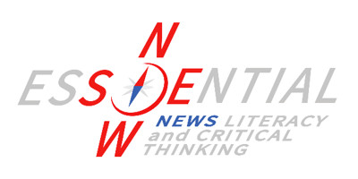
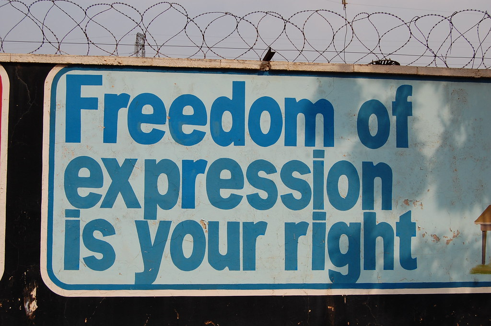
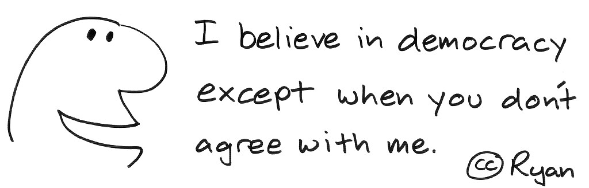
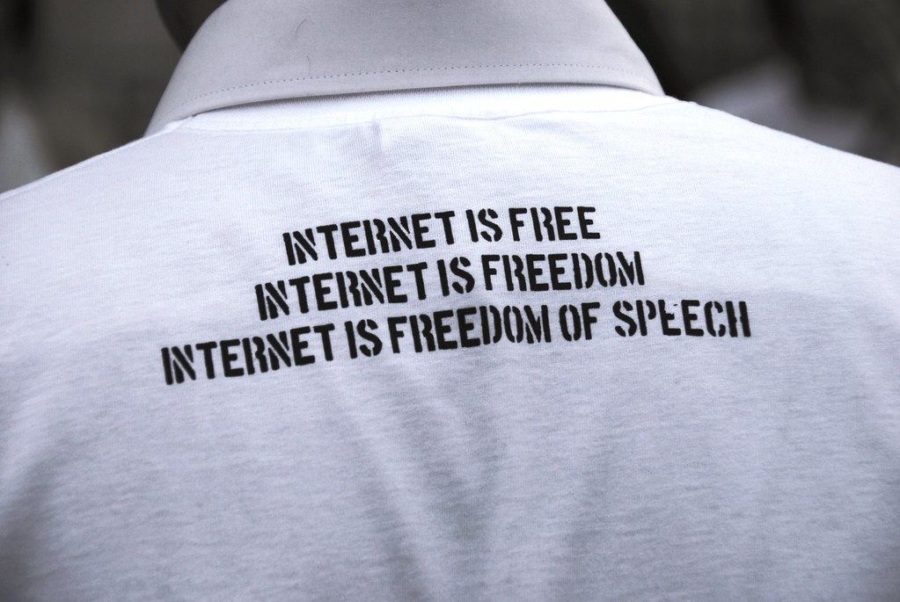

Za udeležence
Za izvajalce
Trainees Edition
Trainers Edition

Glavni namen tega modula je razložiti svobodo izražanja in druge povezane pravice ter njihove funkcije. Sekundarni namen je usmerjanje izvajalcev usposabljanja, ki želijo vsebino tega modula uporabiti pri usposabljanju svojih udeležencev. S temi cilji je predstavljena svoboda izražanja skupaj s smernicami o tem, kako poučevati to temo.
Udeleženci, ki bodo uspešno zaključili ta modul, bodo znali:
Poleg tega bodo predavatelji, ki bodo uspešno zaključili ta modul, lahko pokazali, da razumejo, kako poučevati o svobodi izražanja.
Ta modul je sestavljen iz naslednjih delov:
Glavni cilji modula, opis vsebine in učni rezultati so pojasnjeni v delu Opis modula. Smernice za udeležence usposabljanja vključujejo navodila in predloge za udeležence izobraževanja. Smernice za izvajalce usposabljanja vodijo izvajalce usposabljanja skozi različne faze usposabljanja in vsebujejo nasvete, ki bi lahko bili koristni pri poučevanju predmeta. Vsebina vključuje vsa študijska gradiva in vaje, povezane z vsebino. Kviz vključuje vprašanja z več možnostmi izbire in/ali resnična/nepravilna vprašanja, s katerimi lahko udeleženci usposabljanja preverijo svoj napredek. Viri vsebujejo dve komponenti: reference in priporočene vire za nadaljnje branje in študij. Reference so seznam virov, navedenih v vsebinskem delu. Priporočeni viri so sestavljeni iz seznama dodatnih virov in videoposnetkov, ki jih priporočamo za branje in gledanje, da bi se naučili več o temi.
Od udeležencev izobraževanja se pričakuje, da bodo prebrali besedilo, si ogledali priporočene videoposnetke in izvedli vaje. Za dodatne informacije lahko poiščejo predlagane vire. Po končanem študiju vsebine učencem priporočamo, da opravijo kviz za oceno svojega napredka. Po potrebi lahko ponovno pregledajo študijsko gradivo.
Smernice za izobraževalce vključujejo predloge in nasvete o tem, kako predstaviti vsebino tega modula odraslim.
Priporočamo pripravo predstavitve (PowerPoint/Prezi/Canva), obogatene z vizualnim gradivom (slike in videoposnetki) in jasnimi primeri. Predlagamo tudi, da primere in vaje iz tega modula prilagodite vprašanjem, ki so bolj znana dejanski ciljni skupini. Izbira lokalnih primerov (specifičnih za posamezno državo) v zvezi z aktualnimi ali dobro znanimi vprašanji pomaga ponazoriti določeno temo. Prav tako pomaga pritegniti pozornost udeležencev usposabljanja. Bolj kot so primeri znani in priljubljeni, bolje bo sporočilo posredovano.
Na začetku lahko uporabite kratek kviz (3 do 5 vprašanj) v programu Kahoot ali vprašanja z Mentimetrom, da udeležence pritegnete k temi. Uporablja se lahko kot motivacijsko orodje in tudi kot orodje za preverjanje obstoječega znanja udeležencev o temi. Nekateri primeri vprašanj so lahko naslednji: Kaj je svoboda izražanja? Kaj je svoboda obveščanja? Zakaj so te pravice pomembne?
Med usposabljanjem se lahko kombinirajo različne učne metode. Na primer:
Učinkovit način vključevanja udeležencev in določanja skupnih pričakovanj o tem, kaj se bodo naučili, je postaviti nekaj predhodnih vprašanj o temi. To lahko storite s skupinskim delom, tako da udeležence usposabljanja pozovete k razpravi in zbiranju idej, lahko pa tudi individualno, tako da vsakega udeleženca prosite, naj svoje ideje zapiše na samolepilne lističe. Dejavnost se lahko izvede na naslednji način:
Jasno je treba opredeliti cilj učne ure (pojasniti svobodo izražanja in druge sorodne pravice ter njihove funkcije). Po ogrevalnih vprašanjih bo lažje pojasniti cilje.
Med predstavljanjem vsebine poskrbite za interakcijo z udeleženci in jih spodbudite k aktivnemu sodelovanju.
Naredite kratek povzetek učne ure in postavite nekaj vprašanj, ki bodo pomagala razbrati najpomembnejša sporočila, ki jih želite posredovati.
Pri tem so vam lahko v pomoč naslednja vprašanja:
Ob zaključku se prepričajte, da udeleženci usposabljanja razumejo, da so svoboščine osnovne človekove pravice, vendar morajo imeti določene meje, da ne škodujejo drugim ljudem.
Svoboda izražanja, ki je sama po sebi pomembna temeljna pravica, je ključna tudi za zaščito in podporo drugih svoboščin in pravic, kot sta svoboda mišljenja in obveščanja. Ljudje to pravico uporabljajo v vsakdanjem življenju z izmenjavo idej, mnenj in informacij. Zato je zelo pomembno, da tisti, ki želijo uresničiti svobodo izražanja, razumejo sredstva in strukture komuniciranja ter organizirajo okolja, ki takšno izmenjavo omogočajo (Panday, n.d.). Po mnenju Montesquieuja, enega od teoretikov demokracije, je svoboda mišljenja najpomembnejša svoboda. Lastnosti, ki delajo ljudi človeške, kot sta ustvarjalnost in krepostnost, delujejo in se razvijajo le v svobodnem okolju. V okoljih, v katerih je mogoče svobodno izražati ideje, demokratične institucije še naprej obstajajo in imajo možnost razvoja. Svobodna oseba je oseba, ki lahko svobodno razmišlja in svobodno izraža svoja mnenja (Çelik in Tonta, 1996, str. 1). Svoboda izražanja je načelna pravica v sodobnih družbah in ima poseben pomen za dobro delujoče ustavne demokracije. Ta svoboda razlikuje odprte družbe od zaprtih in liberalne od avtoritarnih. Vendar pojem svobode izražanja vključuje veliko več kot le svobodo izražanja lastnega mnenja. Na splošno velja, da se svoboda mišljenja, svoboda obveščanja in svoboda govora lahko analizirajo pod krovnim standardom "izražanja" (Hugelier, 2011, str. 61-62; Legal Information Institute, n.d.). Med viri, ki so v zgodovini prvič omenjali temeljne človekove pravice, kot so svoboda izražanja, govora in obveščanja, je razvidno, da so bili v ospredju naslednji:

"Svoboda izražanja je vaša pravica" avtorja rhinman je licenciran pod CC BY 2.0
Danes je svoboda izražanja temeljna človekova pravica, ki so jo Združeni narodi leta 1948 priznali v Splošni deklaraciji človekovih pravic. Deklaracijo so potrdili predstavniki različnih držav v Generalni skupščini Združenih narodov, ki imajo različna pravna in kulturna ozadja z vsega sveta. Deklaracija je prvič določila temeljne človekove pravice, ki jih je treba vsesplošno varovati, in je bila prevedena v več kot 500 jezikov (United Nations, n.d.). V 19. členu Splošne deklaracije človekovih pravic je ta pravica omenjena na naslednji način (Združeni narodi, 1948): "Vsakdo ima pravico do svobode mnenja in izražanja; ta pravica vključuje svobodo do neoviranega izražanja mnenj ter do iskanja, sprejemanja in širjenja informacij in idej s kakršnimikoli sredstvi in ne glede na meje."
V skladu s tem je Generalna skupščina Združenih narodov sprejela Mednarodni pakt o državljanskih in političnih pravicah, ki je začel veljati leta 1976 in v katerem je bil akt o svobodi govora (19. člen) posodobljen na naslednji način (Generalna skupščina ZN, 1966):
Svoboda izražanja je kot človekova pravica priznana tudi v členu 10 Evropske konvencije o človekovih pravicah iz leta 1952. Člen vsebuje naslednjo izjavo (Svet Evrope, 1952): "Vsakdo ima pravico do svobode izražanja. Ta pravica vključuje svobodo imeti svoje mnenje ter sprejemati in razširjati informacije in ideje brez vmešavanja javne oblasti in ne glede na meje. Ta člen državam ne preprečuje, da bi zahtevale izdajanje licenc za radijske, televizijske ali kinematografske dejavnosti." "Svoboda", navedena v teh členih, ne vključuje le pravice osebe, da izrazi svoje mnenje (z drugimi besedami "svoboda govora"), temveč tudi pravico do sprejemanja in posredovanja informacij in idej. Po drugi strani pa je v teh členih poudarek bolj na idejah kot na informacijah (Hugelier, 2011, str. 64). Obstaja nekaj argumentov (zlasti glede različnih političnih in filozofskih perspektiv) o tem, kakšne naj bodo meje svobode, ki jo zajema "svoboda izražanja". Po nekaterih mnenjih bi moralo biti svobodno vsako izražanje, dokler se ne spremeni v fizično dejanje, po drugih pa bi morali biti izrazi, ki so lahko element psihološkega pritiska (na primer sovražni govor, pornografija), obravnavani zunaj meja pojma svobode (van Mill, 2021). V 10. členu Evropske konvencije o človekovih pravicah so te omejitve navedene na naslednji način (Svet Evrope, 1952): "Ker uresničevanje teh svoboščin prinaša dolžnosti in odgovornosti, lahko zanje veljajo formalnosti, pogoji, omejitve ali kazni, ki jih določa zakon in so nujne v demokratični družbi, v interesu nacionalne varnosti, ozemeljske celovitosti ali javne varnosti, za preprečevanje neredov ali zločinov, za zaščito zdravja ali morale, za zaščito ugleda ali pravic drugih, za preprečevanje razkritja zaupnih informacij ali za ohranjanje avtoritete in nepristranskosti sodstva."
Če slišite mnenja drugih ljudi, se lahko naučite, ali imajo prav, in jasneje razkrijete resnico, če se motijo. Z drugimi besedami, posameznik, ki se hrani z različnimi mislimi, bolje razvija svoje mišljenje (Sorabji, 2021, str. 64-65). Mediji imajo temeljno vlogo "javnega psa čuvaja", saj je njihova glavna naloga, da oblikujejo podlago za izražanje mnenj, idej ter dajanje in sprejemanje informacij, če so v javnem interesu. Svoboda obveščanja in tudi svoboda izražanja sta bistvenega pomena za obstoj svobodnega tiska. Zato obstaja nedvomna povezava med svobodo izražanja in svobodo obveščanja (Hugelier, 2011, str. 63). Svobodna oseba je oseba, ki lahko svobodno razmišlja in izraža svoja mnenja. Predpogoj za to je pravica do dostopa do točnih, neizkrivljenih informacij, kar imenujemo svoboda obveščanja. Videti je, da se v državah, kjer ta pravica ni zadostna, javno mnenje ne oblikuje pravilno, nedemokratični režimi pa uporabljajo množične medije, da svojim ljudem vsiljujejo neresnične razmere. Zato je osnovna predpostavka koncepta svobode mišljenja v demokraciji pravica državljanov do dostopa do informacij (Çelik in Tonta, 1996, str. 1). "Iskanje informacij je bistveno za iskanje resnice, ta pa za kolektivno odločanje v demokratični družbi." (Hugelier, 2011, str. 64) Današnje sodobne družbe široko uporabljajo svobodo obveščanja prek medijev. Zato je v javnem interesu, da podpremo svobodo tiska, možnost spoznavanja in razširjanja vseh vrst novic prek množičnih medijev pa je s Splošno deklaracijo človekovih pravic, Evropsko konvencijo o človekovih pravicah in Helsinškim sklepnim aktom priznana kot pravica ne glede na državne meje (Çelik in Tonta, 1996, str. 1). Mednarodna organizacija Novinarji brez meja (angl. Reporters Without Borders oz. RSF), ki skrbi za to, da bi ljudje te pravice uživali enako, v ta namen spremlja razmere novinarjev po vsem svetu in vsako leto razvršča države glede na stopnjo svobode medijev (Reporters Without Borders, 2021).

"Selektivna demokracija" avtorja ryan2point0 je licenciran pod CC BY-NC-ND 2.0
Vsi različni glasovi in mnenja si zaslužijo pošteno obravnavo, ne le v imenu svobode govora in izražanja, temveč tudi zato, da bi ljudem omogočili dostop do različnih informacij (Pickard, 2020). V digitalni dobi se je komuniciranje razvilo od osebnih elektronskih sporočil ali statičnega brskanja po spletu do bolj interaktivnega, v deljenje usmerjenega globalnega pojava, ki hitro doseže veliko občinstvo in ima izjemno širok domet. Ta korenita sprememba, ki so jo ustvarili zlasti družbeni mediji, je privedla tudi do razvoja interneta. Širjenje digitalnih tehnologij ni le spodbudilo dostopa do neomejenih informacij, temveč je ustvarilo tudi raznolik ekosistem glasu, slike, besedila in kode, ki je dostopen iz različnih vrst medijev in z uporabo različnih vrst tehnologij (Panday, n. d.). S tem razvojem se je povečala količina informacij, do katerih je mogoče dostopati, odpravile so se nekatere ovire za dostop do informacij (na primer časovne in prostorske omejitve), zaradi česar je komunikacija postala bolj demokratična. Tako so uporabniki interneta lahko prevzeli vlogo pisca, izdajatelja ali razširjevalca televizijskega programa na internetu in obšli vratarje v tradicionalnem medijskem ekosistemu, s čimer so se odprle neomejene možnosti za ustvarjanje, deljenje in izmenjavo vseh vrst vsebin. S tega vidika je internet postal globalno dostopno komunikacijsko orodje brez tradicionalnih omejitev svobode govora in izražanja. Vendar je internet začel postajati vse bolj sporen, saj se je število spletnih vsebin povečalo, zanesljivost teh vsebin je postala vprašljiva, ljudje pa so se zaradi učinka algoritmov ujeli v past podobnih glasov. Zato so se danes razprave, ki izpodbijajo prost pretok informacij in svobodo izražanja, še okrepile. Z drugimi besedami, pojavljajo se nenamerne posledice, ko se razpravlja o različnih oblikah moči in nadzora, vključno z regulacijo vsebin, ki se delijo na internetu (Panday, n. d.).
Pojav interneta je prelomno vplival na izražanje idej in spremenil nekatere temeljne vidike, ki bodo povzeti v nadaljevanju (Zeno-Zencovich, 2008, str. 100-112):

"Internet je svoboda govora" avtorja BEE FREE - PGrandicelli [the social bee] je licenciran pod CC BY-NC-SA 2.0
Čeprav je internet pripravil teren za svobodo in demokracijo, s kakršnima se človeštvo še ni srečalo, so tudi tukaj meje svoboščin predmet razprav. V tem okolju, kjer so ljudje izdajatelji, pisci, proizvajalci in razširjevalci informacij brez posrednikov, se lahko širijo tudi škodljive, lažne ali namerno manipulativne ali pristranske informacije. To je lahko velika težava, na primer če se osebni profili, ki temeljijo na svobodi govora, uporabljajo za nagovarjanje volivcev. Mogoče je našteti nekaj problematičnih informacij, ki se širijo prek interneta, zlasti prek družbenih medijev (Sorabji, 2021, str. 112-133):
Kot je bilo omenjeno v prejšnjih naslovih, je bistvo svobode izražanja ali govora razkrivanje resnice in učenje od drugih. Toda v takšnem okolju družbenih medijev, kjer je prodaja podatkov ali ustvarjanje osebnih profilov na podlagi teh podatkov dragocenejše od resnice, te osnovne človekove pravice v resnici ne veljajo (Sorabji, 2021, str. 133). Po drugi strani pa ni vsako zbiranje osebnih podatkov nezakonito. Na primer, veliko podjetje za spletno e-trgovanje lahko ponudi nove izdelke tako, da preuči osebne podatke in preference posameznika. Pri tem je lahko rdeča nit prodaja podatkov drugim podjetjem ali, kot je omenjeno v prejšnjih naslovih, uporaba teh podatkov za povzročanje škode ljudem (Sorabji, 2021, str. 122). Deljenje podatkov ali ustvarjanje osebnih profilov na internetu ni nujno škodljivo dejanje. Pri tem je pomembno, da se zavedamo možnih manipulacij in da pri uporabi interneta, tako kot pri vsakdanjem življenju v družbi, ravnamo odgovorno, saj se zavedamo, da nimamo neomejene svobode (Sorabji, 2021, str. 172). Izobraževalni programi, kot so medijska ali novičarska pismenost, so nekatere od trdnih rešitev za ozaveščanje javnosti.
Council of Europe. (1952). The European Convention on Human Rights. Strasbourg: Directorate of Information. Retrieved from https://www.echr.coe.int/documents/convention_eng.pdf.
Cunningham, J. M. (n.d.). A Brief History of Press Freedom. Encyclopedia Britannica. Retrieved from https://www.britannica.com/story/250-years-of-press-freedom.
Çelik, A. & Tonta, Y. (1996). Düşünce özgürlüğü, bilgi edinme özgürlüğü ve bilgi hizmetleri. In Tonta, Y. & Çelik, A. (Eds.). Bilgi Edinme Özgürlüğü (Freedom of Information), (pp. 1-13). Ankara: Türk Kütüphaneciler Derneği, 1996.
Government Offices of Sweden. (2015, May 17). The Constitution of Sweden. Retrieved from https://www.government.se/information-material/2013/08/the-constitution-of-sweden/.
Hugelier, S. (2011). Freedom of expression and transparency: Two sides of one coin. Jura Falconis, 47(1), 61–91.
Legal Information Institute. (n.d.). Freedom of Expression - Speech and Press. Retrieved from https://www.law.cornell.edu/constitution-conan/amendment-1/freedom-of-expression-speech-and-press.
Panday, J. (n.d.). Freedom of Expression in a Digital Age: Effective Research, Policy Formation & the Development of Regulatory Frameworks in South Asia. Retrieved from https://cis-india.org/internet-governance/events/freedom-of-expression-in-digital-age.
Pickard, V. (2020). Democracy Without Journalism? Confronting the Misinformation Society. New York: Oxford University Press.
Reporters Without Borders. (2021). World Press Freedom Index - 2021. Retrieved from https://rsf.org/en/ranking.
Sorabji, R. (2021). Freedom of Speech and Expression: Its History, its Value, its Good Use, and its Misuse. New York: Oxford University Press.
UN General Assembly. (1966, December 16). International Covenant on Civil and Political Rights. Retrieved from https://www.ohchr.org/en/professionalinterest/pages/ccpr.aspx.
United Nations. (1948). Universal Declaration of Human Rights. Retrieved from https://www.un.org/sites/un2.un.org/files/udhr.pdf.
United Nations (n.d.). Universal Declaration of Human Rights. Retrieved from https://www.un.org/en/about-us/universal-declaration-of-human-rights.
van Mill, D. (2021). Freedom of speech. The Stanford Encyclopedia of Philosophy (Spring 2021 Edition), Zalta, E.N. (Ed.). Retrieved from https://plato.stanford.edu/archives/fall2016/entries/freedom-speech/#Aca.
Zeno-Zencovich, V. (2008). Freedom of expression: A critical and comparative analysis. New York: Routledge-Cavendish.
Cunningham, J. M. (n.d.). A Brief History of Press Freedom. Encyclopedia Britannica. Retrieved from https://www.britannica.com/story/250-years-of-press-freedom.
McDonald, A. (2015, November 5). Freedom of information. Encyclopedia Britannica. https://www.britannica.com/topic/freedom-of-information.
UNESCO. (n.d.). Freedom of Expression: A Fundamental Human Right Underpinning all Civil Liberties. https://en.unesco.org/70years/freedom_of_expression.
Weibull, L. (2020, November 25). Freedom of the Press Act of 1766. Encyclopedia Britannica. https://www.britannica.com/topic/Freedom-of-the-Press-Act-of-1766.
Langton, R. (2015). What is the Point of Free Speech? https://www.youtube.com/watch?v=7vMiiMLrZuo.
Crash Course. ()2015. Freedom of the Press: Crash Course Government and Politics #26. https://www.youtube.com/channel/UCX6b17PVsYBQ0ip5gyeme-Q.